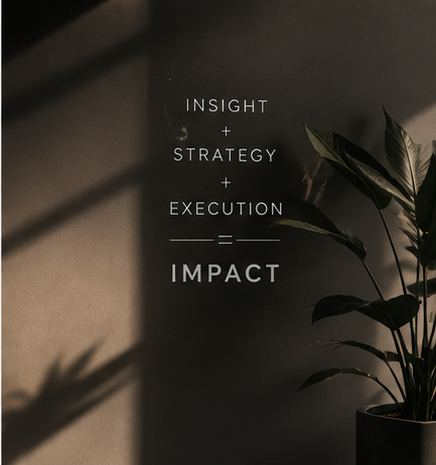

We're a transformation intelligence company based in Strasbourg: we combine proprietary, evidence-based diagnostic technology with hands-on strategic and execution consulting for organisations across every sector in Europe.
Compliance, digital transformation, artificial intelligence, workforce development, innovation, and operational improvement are just a few of the initiatives organisations are investing in today. Yet transformation programmes are frequently characterised by a lack of clarity in priorities, weak diagnosis, poor execution, resistance to change, unclear ownership, and weak governance.
That's the market opportunity we built NOEVARA to serve: not another strategy firm, but a transformation intelligence firm - one that treats diagnosis as a discipline in its own right, not two weeks of warm-up before the "real" consulting begins.
We focus mainly on European organisations that require enterprise-class thinking in the context of enterprise-class transformation - without the price tag or complexity that usually comes with it.
Small, medium, and mid-sized enterprises across every industry.
A broad collection of industrial and manufacturing companies.
Finance, healthcare, life sciences, and critical infrastructure.
Public and para-public organisations navigating modernisation.
Companies and scale-ups actively innovating and growing fast.
These organisations are under the same pressures as large enterprises but often cannot access large-firm consulting, which tends to be expensive, complex, and generic. We solve that with enterprise thinking, easily-engaged models, easy-to-implement support, and privacy-first diagnostic tools.
To be clear: nobody at NOEVARA will check your blood pressure. We're not physicians, and this isn't medicine. But every specialist here holds a genuine PhD in their field - organisational behaviour, AI systems, EU regulatory law, corporate finance - real doctoral training, aimed at your business instead of a thesis committee. We just think the diagnostic method doctors use - examine first, treat second, never guess - is the one thing consulting forgot to borrow.
One clarification, for anyone skimming: the department names above - Cardiology, Radiology, and so on - are our own branding for how we organise expertise, not literal medical departments. The PhDs are real. The stethoscopes are not. If you'd like to meet the actual humans behind each practice, get in touch and we'll introduce you.
Most consultants ask what the problem is and make a note of your answer. TIPE tells you what the real problem is - even if it's one you didn't know how to put into words.
TIPE is our proprietary framework underpinning all of our practice - a structured, evidence-based diagnostic and decision-support ecosystem that looks at every interconnected dimension that determines whether transformation succeeds: strategy, leadership, people and culture, processes, technology, data, knowledge and capability, performance, innovation, and overall transformation readiness.
One distinction worth making clearly: our nine diagnostic instruments - OrgScan, AI Maturity Lens, and the rest - each capture a single point-in-time snapshot. TIPE, the platform, is different - it's the one instrument that never stops measuring, tracking your transformation continuously against your market and named competitors, not just at kickoff. See how TIPE the platform works →
A technology problem is often really a capability gap or broken process. TIPE traces the chain back to actual cause.
Every finding expressed in euros, per employee, over three years - the language that gets budget approved.
A Risk Priority Matrix plots every finding by likelihood and impact - so leadership fixes what matters first.
A phased transformation roadmap with owners and timelines, generated directly from the diagnostic.
TIPE tools run offline - without the need to exchange data with the outside world or rely on cloud services. This is a must for industrial companies, healthcare organisations, defense contractors, regulated financial institutions, public bodies, and any organisation that wants full control over their data. That's what allows us to enter the door where cloud-based competitors can't get past procurement.
"Before you spend money trying to transform, TIPE helps you understand what actually needs to be transformed, why, where to start, and what to prioritise."
Every engagement - regardless of entry point - follows the same disciplined, proprietary methodology.
Understand the organisation before making assumptions.
Identify root causes rather than symptoms.
Create one coherent transformation journey.
Work alongside leadership to execute.
Maintain momentum and accountability.
Build lasting organisational capability.
Create measurable competitive advantage.
| Traditional Consulting | NOEVARA Transformation Intelligence |
|---|---|
| Interviews and workshops | Structured, tool-based evidence collection |
| Generic maturity frameworks | Root-cause diagnostic specific to your data |
| A slide-deck presentation | A quantified, prioritised transformation roadmap |
| Project ends at the recommendation | Implementation support, capability building, continuous improvement |
| "Where is the organisation today?" | "What should happen next, why, how, and with what expected impact?" |
Six commitments that shape every diagnostic, every recommendation, and every engagement - regardless of sector or size.
We do not open an engagement with a hypothesis dressed up as a finding. Every recommendation we make is traceable to a specific piece of evidence collected through a proprietary diagnostic instrument - not a workshop, not a hunch, not a framework borrowed from a different company in a different sector. When we tell a board what's wrong, we can show them exactly how we know. This is not caution for its own sake; it's what makes a recommendation defensible in the room where budget actually gets approved.
Complexity is not a sign of rigor - it's usually a sign that the thinking isn't finished. We translate every diagnostic finding into language a board can act on the same day: quantified in euros, prioritised by impact, and stripped of the jargon that lets a vague recommendation hide. If a finding can't be explained clearly in one sentence, we haven't understood it well enough yet to bring it to you.
A report that sits in a folder has never transformed anything. We stay through Deploy, Drive, and Develop - the phases of the 7D Model where most consulting relationships end and most transformation actually happens. Success, for us, is measured in adoption, efficiency, and capability built inside your organisation, not in the number of slides we handed over on the way out the door.
The organisations that need transformation intelligence most - industrial companies, healthcare providers, defense contractors, regulated financial institutions, public bodies - are frequently the ones that cannot risk sensitive operational data leaving their own walls. Our diagnostic tools run offline by design, not as an afterthought. Trust isn't a claim we make; it's an architectural decision we made before writing a line of code.
An elegant framework that never gets implemented is worth nothing to the people whose jobs depend on the outcome. We measure ourselves against the same standard we apply to your organisation: did the intervention actually move the number it was meant to move? If a recommendation can't survive contact with your operational reality, it isn't finished - regardless of how well it reads on a slide.
Transformation isn't an event with a start and end date - it's a discipline an organisation either builds or doesn't. Every one of our diagnostic tools is designed to be re-run: quarterly, post-intervention, or pre-audit. We'd rather build your internal capability to sense and respond to change continuously than sell you a single engagement and wait for the next crisis to bring you back.

We want to develop our own diagnostic tools and transformation models for specific industry sectors, build strategic partnerships, deliver recurring transformation programmes, and create an acknowledged transformation ecosystem for organisational improvement across Europe.